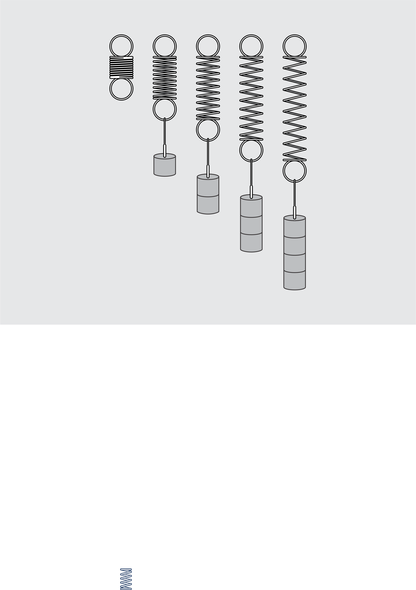
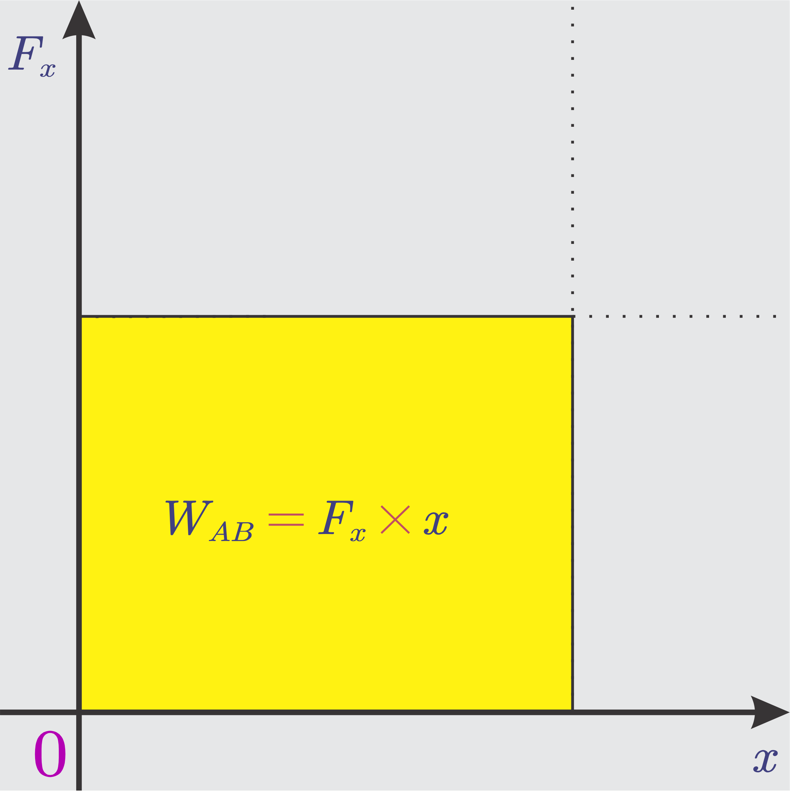
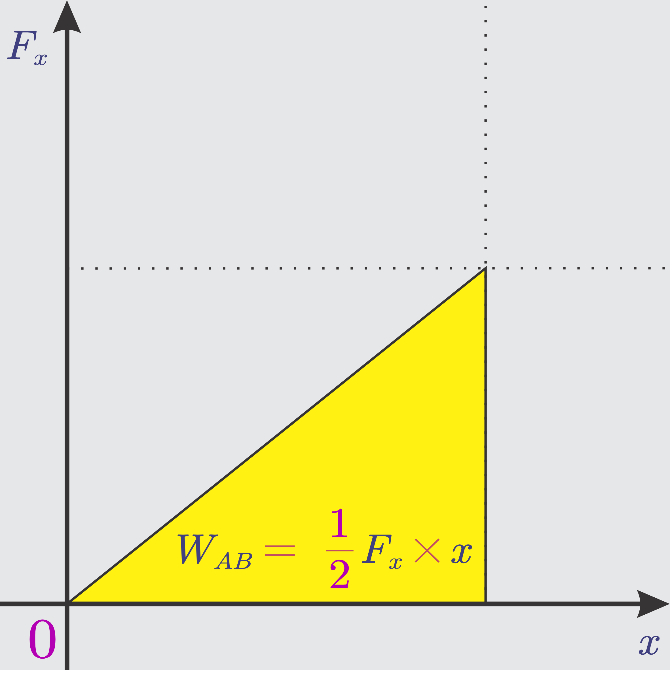

# Usaha dan Energi - Usaha - Energi dan bermacam bentuknya - Usaha sebagai perubahan energi (Kinetik dan Potensial) - Hukum Kekekalan Energi --- ## Pengertian Usaha - Dalam kehidupan sehari-hari, usaha diartikan sebagai segala sesuatu yang dikerjakan manusia untuk memenuhi harapan/keinginan. - Dalam ilmu fisika, usaha atau kerja adalah *tenaga yang diberikan kepada sebuah benda dalam bentuk gaya sehingga benda mengalami perpindahan*. --- ## Pengertian Usaha - Secara matematis, usaha adalah hasil perkalian dot antara gaya dan perpindahan. ###### $$W=\vec{F}\cdot\vec{s}=F\cos\theta\ s$$ - Jika gaya atau perpindahan nilainya tidak tetap, maka ###### $$W=\int \mathbf {F} \cdot d\mathbf {s}$$ --- Keterangan: - *W* = Usaha (joule/J) - *F* = Gaya (N) - *s* = perpindahan (m) - *θ* = sudut antara gaya dan perpindahan - Catatan: usaha adalah **besaran skalar**. --- ## Konversi Satuan - Dalam sistem satuan CGS (centimeter gram sekon) satu dyne centimeter sama dengan satu erg. - **$1\ \text{dyn/cm}=1 \ \text{erg}$**. **$1\ \text{J}=107 \ \text{erg}$**. - joule ke kalori. **$1\ \text{J}=0,239 \ \text{kalori}$**. - joule ke kilowatt-jam. **$1\ \text{J}=2,78\times 10^{-7} \ \text{kWh}$**. - joule ke elektron volt. **$1\ \text{J}=6,24\times 10^{18} \ \text{eV}$**. --- ## Usaha Nol Usaha yang dilakukan suatu gaya sama dengan nol ketika: - Tidak ada perpindahan (**$s=0$**). - Gaya dan perpindahan saling tegak lurus, sehingga **$\cos θ=\cos 90°=0$** (jika kita membawa ember secara horizontal, gaya gravitasi tidak melakukan kerja). --- ### Usaha oleh Gaya Gesek - Gaya yang berlawanan dengan perpindahan memberikan usaha yang negatif. Gaya gesek dipastikan menghasilkan usaha yang negatif karena arah gaya gesek berlawanan dengan perpindahan benda. - Usaha oleh gaya gesek tidak bergantung pada perpindahan tetapi bergantung pada lintasan. --- ### Usaha oleh Gaya Gesek - Usaha oleh gaya gesek pada benda yang bergerak tidak pernah nol meskipun benda kembali ke titik semula. - Usaha oleh gaya gesek menghasilkan panas. Panas diberikan pada udara sehingga tampak seolah-olah hilang/lenyap. --- ### Usaha oleh Gaya Gesek - Secara matematis, usaha karena gaya gesek ###### $$W_f=\vec{f}\cdot\vec{s}=f\cos\theta\ s$$ - *θ* = sudut antara gaya gesek dan perpindahan = 180° sehingga ###### $$W_f=-f\ s$$ --- #### Usaha oleh Gaya yang Tidak Konstan - Perhatikan ilustrasi berikut. Pada percobaan pegas, semakin besar beban (semakin besar gaya), semakin besar pula pertambahan panjang (perpindahannya).  --- #### Usaha oleh Gaya yang Tidak Konstan <div class="r-hstack justify-center"> <div class="tooltip" data-id="box2" style="background: #999; height: 300px; margin: 10px; border-radius: 5px;"><span class="tooltiptext-b-3">Usaha oleh gaya yang besarnya konstan</span></div> <div class="tooltip" data-id="box3" style="background: #999; height: 300px; margin: 10px; border-radius: 5px;"><span class="tooltiptext-b-3">Usaha oleh gaya yang besarnya berubah secara linear</span></div> </div> - Grafik pertama menggambarkan usaha oleh gaya tetap. - Grafik kedua menggambarkan usaha oleh gaya yang tidak tetap. --- - Berdasar grafik pertama, nilai usaha W = luas daerah yang diarsir yang dibatasi oleh nilai F dan x tertentu. **$W=F\times x$**. - Untuk grafik kedua kita bisa pahami bahwa nilai luas bagian yang diarsir sama dengan luas segitiga. **$\text{Luas}=W=\frac 1 2 \times alas \times tinggi=\frac 1 2 \times F \times x $**. --- ## Energi - Energi adalah kemampuan untuk melakukan usaha/kerja. Ketika sebuah benda melakukan usaha terhadap benda lain, maka terjadi transfer energi. Transfer energi dapat terjadi dari suatu tempat ke tempat lain atau dari satu bentuk energi ke bentuk energi lain. --- - Energi termasuk besaran skalar yang tidak mempunyai arah. Satuan energi adalah *joule*. Joule (simbol **J**) adalah satuan SI untuk energi dengan basis unit **kg m<sup>2</sup>s<sup>-2</sup>**. --- ### Macam-macam Bentuk Energi - Energi dapat berubah dari satu bentuk ke bentuk lainnya. Misalnya, energi listrik menjadi energi panas, energi listrik menjadi energi gerak, energi gerak menjadi energi bunyi, energi listrik menjadi energi suara, energi gerak menjadi energi panas, energi cahaya menjadi energi kimia, energi kimia menjadi gerak, energi panas menjadi gerak, dsb. - Hukum kekekalan energi menyatakan bahwa **energi tidak dapat diciptakan dan tidak dapat dimusnahkan**, hanya dapat berubah ke bentuk lainnya. --- ### Energi Kinetik - Energi kinetik adalah energi yang dimiliki benda karena geraknya/kecepatannya. - Secara matematis, ###### $$EK=\frac 1 2 mv^2$$ Keterangan: - *EK* = Energi kinetik (joule/J) - *m* = massa (kg) - *v* = kecepatan (m/s) --- ### Usaha sebagai Perubahan Energi Kinetik - Untuk benda yang bergerak dengan percepatan tetap, kita memiliki hubungan $$a=\frac{v_{t}-v_{0}}{t}$$ dan $$s=v_0+\frac 1 2 at^2=v_0+\frac 1 2 \frac{v_{t}-v_{0}}{t}t^2$$ --- **$$s=\frac{v_{t}+v_{0}}{2}t$$** Dari hukum Newton II, kita memiliki *$F=ma$*. Sehingga, $$W=F\ s=m\ a\ s=m\Big(\frac{v_{t}-v_{0}}{t}\Big)\Big(\frac{v_{t}+v_{0}}{2}\Big)t$$ $$W=\frac 1 2 mv_t^2-\frac 1 2 mv_0^2$$ --- - Persamaan di atas membuktikan bahwa perubahan energi kinetik (energi kinetik akhir dikurangi energi kinetik awal) sama dengan usaha yang dikerjakan. ###### $$W=\Delta EK=EK_{akhir}-EK_{awal}$$ --- ### Energi Potensial - Energi potensial adalah energi yang dimiliki benda karena kedudukan/posisinya terhadap benda lain. Energi potensial gravitasi dimiliki benda karena ketinggiannya. Energi potensial pegas dimiliki pegas yang mengalami peregangan atau kompresi. --- #### Energi Potensial Gravitasi - Sebuah benda bermassa *m* yang berada pada ketinggian *h* akan memiliki Energi potensial gravitasi sebesar: ###### $$EP=mgh$$ Keterangan: - *EP* = Energi potensial gravitasi (joule/J) - *m* = massa (kg) - *g* = percepatan gravitasi(m/s<sup>2</sup>) - *h* = ketinggian (m) --- #### Energi Potensial Pegas - Pada pegas, besarnya pertambahan panjang tergantung pada gaya yang bekerja padanya. Ini dinyatakan dalam Hukum Hooke *$F=kx$*. Karena gaya yang bekerja bukan gaya yang konstan, besarnya usaha ###### $$W=EP=\frac 1 2 kx^2$$ Keterangan: - *k* = konstanta pegas (N/m) - *x* = pertambahan panjang pegas (m) --- ### Usaha sebagai Perubahan Energi Potensial Gravitasi - Dalam gerak jatuh bebas, gaya yang bekerja adalah gaya berat/gravitasi, *$F_W=mg$*. Maka, usaha oleh gaya gravitasi tersebut ###### $$W=Fs=mg(h_{akhir}-h_{awal})$$ - Jika ketinggian akhir adalah 0 (*EP<sub>akhir</sub> = 08), maka: --- ###### $$W=-mgh_{awal}=-\Delta EP$$ Sementara itu usaha yang diperlukan untuk memindahkan benda ke tempat yang lebih tinggi, ###### $$W=mgh=\Delta EP$$ --- ### Hukum Kekekalan Energi Mekanik - Dalam gerak jatuh bebas, energi potensial yang dimiliki benda berubah menjadi energi kinetik. Maka, selain memiliki energi potensial gravitasi, benda juga dapat memiliki energi kinetik. - Jumlah kedua energi tersebut dinamakan energi mekanik. Pada sebuah benda yang bergerak dalam medan gaya konservatif, berlaku hukum kekekalan energi mekanik. --- $$W=\Delta EK=EK_{akhir}-EK_{awal}$$ $$W=-\Delta EP=EP_{awal}-EP_{akhir}$$ $$W=EK_{akhir}-EK_{awal}=EP_{awal}-EP_{akhir}$$ ###### $$EP_{akhir}+EK_{akhir}=EP_{awal}+EK_{awal}$$ ###### $$EM_{akhir}=EM_{awal}$$ --- ### Daya - Daya (*P*) adalah besaran yang menyatakan energi (*W*) per satuan waktu (*t*). Dengan kata lain, daya adalah laju energi yang diserap atau dilepaskan. - Secara matematis, ###### $$P=\frac W t$$ Keterangan: - *P* = Daya (watt/W) - *W* = Usaha/energi (J) - *t* = waktu (s) ---